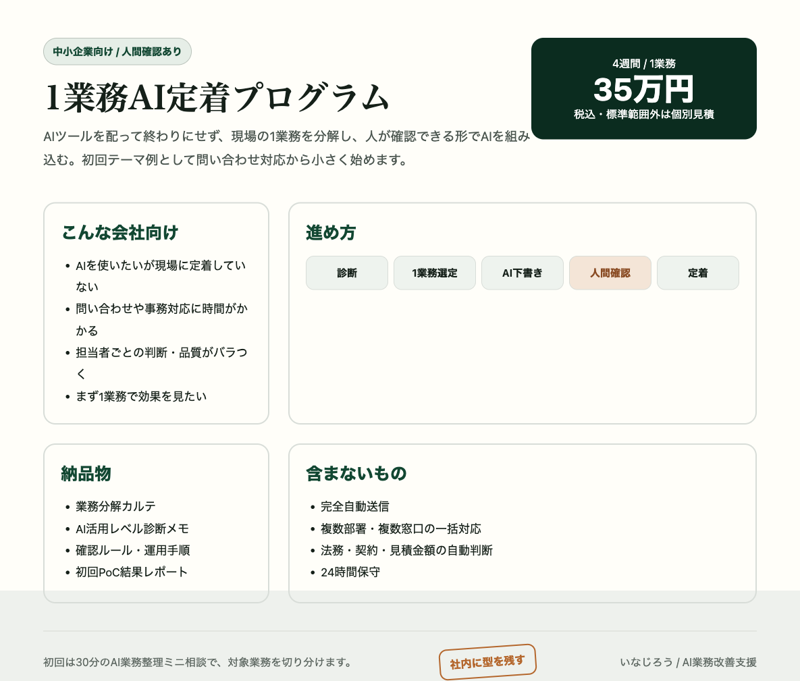

AI活用を、まず1業務から社内に定着させる。
AIツールを配って終わりではなく、現場の業務を一緒に分解し、人が確認できる形でAIを組み込むところまで伴走します。最初は、問い合わせ対応のように効果が見えやすい1業務から始めます。
まずは情報交換から。Web制作会社・マーケ支援者の方からの紹介相談も歓迎です。
問題は、AIツール不足ではありません。
多くの会社で止まっているのは、AIそのものではなく、日々の業務のどこにどう差し込むかです。
診断、1業務選定、小さなPoC。
全社DXの大きな話から始めず、AI活用レベルを見たうえで、効果が見えやすい1業務から始めます。
AI活用レベルを見る
現状の業務、データ、担当者、確認ルールを見て、AIを入れてよい範囲を切り分けます。
1業務に絞る
いきなり全部を変えず、効果が見えやすく、失敗しても戻せる業務を選びます。
型を残す
手順、確認ルール、対応ログを残し、社内の人が次の業務にも広げられる状態を目指します。
最初の題材として、問い合わせ対応は相性がいい。
問い合わせ対応は、AI活用の可能性を実務で見せやすい入口です。目的は問い合わせ対応だけを便利にすることではなく、社内でAI活用を広げるための最初の成功体験を作ることです。
よくある現状
- フォームやメールの内容確認に時間がかかる
- 担当者ごとに返信品質がバラつく
- 過去返信やFAQが次の対応に活きていない
- 初動が遅れて商談化の前に温度が下がる
最初に作る状態
- AIが分類・不足情報・返信案を下書きする
- 担当者が確認し、人間が最終送信する
- 対応履歴を残し、次の改善に使う
- 「AIを業務に入れる」感覚を社内に残す
面談後に、社内で説明できる資料まで落とします。
LPだけで夢を見せて終わりではなく、面談では現実の業務を分解し、相手が社内や紹介先に説明しやすい形にします。ここには1枚資料、診断カルテ、実務画面のスクショを置けます。

まずは小さく整理し、必要な会社だけ実装へ進みます。
いきなり大きな導入を前提にせず、現状のAI活用レベルと改善候補を見ます。合いそうな場合だけ、診断・実装へ進む流れです。
AI業務整理
ミニ相談
30分。1業務だけ、AI化できる部分と人が確認すべき部分を口頭で切り分けます。
AI活用レベル
診断
90分ヒアリング + 簡易レポート。業務フロー・必要データ・効果見込みを整理します。
1業務AI定着
プログラム
4週間。初回テーマ例は問い合わせ対応。1問い合わせ窓口・Googleスプレッドシート/Gmail前提。範囲外は個別見積です。

担当者
稲田裕次郎（いなじろう）。MENTAで個人向けに70名以上をサポートし、銅メダルを獲得。Webアプリケーション開発の実務経験をもとに、業務の整理から小さな仕組み化まで支援します。自分自身の業務でもAIを使った情報整理・手順化・半自動化を検証しており、「1業務を題材に、安全にAI活用を始める」形を重視しています。
まずは、AI活用できそうな1業務を一緒に見つけます。
「この業務ならAIで改善できそう」「ここは人が見た方がいい」を30分で切り分けます。紹介元のWeb制作会社・マーケ支援者の方からの相談も歓迎です。
AI活用レベルを相談する